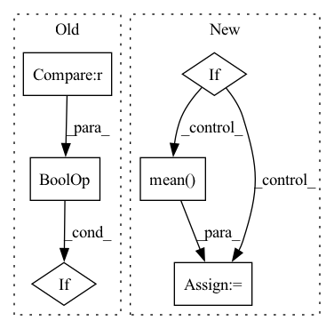

Pattern ID :12890
Before Change
print("----------------------------------------")
// resample the data
if (n % self.resample.resample_every == 0) or (n == nepoch-1) :
if self.resample.resample_from_last:
pos = pos.clone().detach().to(self.device)
else:After Change
for data in self.dataloader:
lpos = data.to(self.device)
if 0: // quick fix for SR
// self.print_parameters()
loss, eloc = self.loss(lpos)
if self.wf.mo.weight.requires_grad and self.ortho_mo:
loss += self.ortho_loss(self.wf.mo.weight)
if torch.isnan(loss):
raise ValueError("Nans detected in the loss")
cumulative_loss += loss
// compute local gradients
self.opt.zero_grad()
loss.backward()
// optimize
if self.opt.lpos_needed:
self.opt.step(lpos)
else:
self.opt.step()
if self.wf.fc.clip:
self.wf.fc.apply(clipper)
else: // only for SR
self.opt.step(lpos)
eloc = self.opt.eloc
cumulative_loss += torch.mean( eloc)
if cumulative_loss < min_loss:
min_loss = self.save_checkpoint(
n, cumulative_loss, self.save_model)In pattern: SUPERPATTERN
Frequency: 3
Non-data size: 6
Instances Fragment ID: 43568827
Project Name: nlesc-jcer/qmctorch
Commit Name: 9f40f526749f6a91afacd7fa260c5e0c7e934715
Time: 2020-02-07
Author: nicolas.gm.renaud@gmail.com
File Name: deepqmc/solver/solver_orbital.py
M Class Name: SolverOrbital
N Class Name: SolverOrbital
M Method Name: run(5)
N Method Name: run(5)
M Parent Class: SolverBase
N Parent Class: SolverBase
M File Name: deepqmc/solver/solver_orbital.py
N File Name: deepqmc/solver/solver_orbital.py
M Start Line: 94
M End Line: 182
N Start Line: 94
N End Line: 179
Before Change
results = []
for i in range(num_tasks):
// Skip if all targets are identical
if all(target == 0 for target in valid_targets[i]) or all(target == 1 for target in valid_targets[i]) :
continue
results.append(metric_func(valid_targets[i], valid_preds[i]))
After Change
// continue
results.append(metric_func(valid_targets[i], valid_preds[i]))
if args.predict_features_and_task:
results = results[:-args.features_size] + [np.mean( results[args.features_size:]) ]
return results
Fragment ID: 43568828
Project Name: aamini/chemprop
Commit Name: 30cb14a76ffed6585f0baa2638ced6e141727324
Time: 2018-12-18
Author: yangk@mit.edu
File Name: chemprop/train/evaluate.py
M Class Name: AnonimousClass
N Class Name: AnonimousClass
M Method Name: evaluate_predictions(4)
N Method Name: evaluate_predictions(4)
M Parent Class:
N Parent Class:
M File Name: chemprop/train/evaluate.py
N File Name: chemprop/train/evaluate.py
M Start Line: 44
M End Line: 63
N Start Line: 66
N End Line: 69
Before Change
eps = torch.randn((num_samples, self.d), dtype=self.loc.dtype, device=self.loc.device)
z_ = self.loc + torch.exp(self.log_scale) * eps
acc = self.a(z_)
if self.training or self.Z == None :
if i == 0:
Z_batch = torch.mean(acc)
Z_sum = torch.sum(acc).detach()After Change
log_p_gauss = - 0.5 * self.d * np.log(2 * np.pi) \
- torch.sum(self.log_scale + 0.5 * torch.pow((z - self.loc) / torch.exp(self.log_scale), 2), 1)
acc = self.a(z)
if self.training or self.Z == None:
eps = torch.randn((num_samples, self.d), dtype=self.loc.dtype, device=self.loc.device)
z_ = self.loc + torch.exp(self.log_scale) * eps
Z_batch = torch.mean( self.a(z_))
if self.Z == None:
self.Z = Z_batch
else:
self.Z = ((1 - self.eps) * self.Z + self.eps * Z_batch).detach() Fragment ID: 43568831
Project Name: vincentstimper/normalizing-flows
Commit Name: 7d58159119f4ea9785682b1726a8243124c84c04
Time: 2020-08-18
Author: vincent.stimper@gmail.com
File Name: normflow/distributions.py
M Class Name: ResampledGaussian
N Class Name: ResampledGaussian
M Method Name: forward(2)
N Method Name: forward(2)
M Parent Class: BaseDistribution
N Parent Class: BaseDistribution
M File Name: normflow/distributions.py
N File Name: normflow/distributions.py
M Start Line: 91
M End Line: 125
N Start Line: 93
N End Line: 129